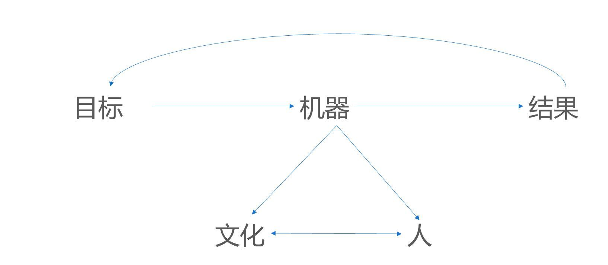

- 000 开篇词 卓越的团队，必然有一个卓越的领导者.md
- 001 你的能力模型决定你的职位.md
- 002 七位CTO纵论技术领导者核心能力.md
- 003 CEO实话实说：我需要这样的CTO.md
- 004 技术领导者不等于技术管理者.md
- 005 CTO的三重境界.md
- 006 像CEO一样思考.md
- 007 要制定技术战略，先看清局面.md
- 008 技术领导力就是成事的能力.md
- 009 CTO是商业思维和技术思维交汇的那个点.md
- 010 创业公司CTO的认知升级.md
- 011 最合适的技术才是最有价值的技术.md
- 012 谈谈CTO在商业战略中的定位.md
- 013 把脉高效执行的关键要素.md
- 014 从零开始搭建轻量级研发团队.md
- 015 定制高效研发流程.md
- 016 培养中层团队的管理认知.md
- 017 团队成长要靠技巧和体系.md
- 018 做到这四点，团队必定飞速成长.md
- 019 将企业打造成一所终身大学.md
- 020 论团队管理与共同升级.md
- 021 绩效管理的目标不仅仅是绩效考核.md
- 022 验证研发团队价值的绩效考核机制.md
- 023 产品技术团队OKR使用法则.md
- 024 996、987，程序员加班文化你怎么看？.md
- 025 建立有效的员工淘汰机制.md
- 026 让细节的病毒感染你的团队.md
- 027 如何在不同组织文化下推行技术管理.md
- 028 业务高速增长期的团队管理：知轻重、重绸缪、调缓急.md
- 029 被8成的人误解的工程师文化.md
- 030 关于工程师文化的六个问题.md
- 031 五位技术领导者的文化构建实战.md
- 032 文化是管理的那只无形之手.md
- 033 选对的人，做正确的事情.md
- 034 打好技术团队搭建的基础.md
- 035 做个合格的技术岗位面试官.md
- 036 高潜力人才的内部培养.md
- 037 技术创业该如何选择赛道.md
- 038 CTO要掌握的产品哲学：理性与人性的权衡.md
- 039 从客户价值谈技术创新.md
- 040 技术人投身创业公司之前，应当考虑些什么？.md
- 041 技术人创业前要问自己的六个问题.md
- 042 团队激励之分配好你的奖金.md
- 043 通过积分考核提升技术团队的绩效.md
- 044 空降技术高管的择业七计.md
- 045 选好人生下一站–CTO空降上篇.md
- 046 走出至暗时刻–CTO空降下篇.md
- 047 空降领导者平稳落地要做的四道题（上）.md
- 048 空降领导者平稳落地要做的四道题（下）.md
- 049 打造高效的研发组织架构：高效研发流程那些事（一）.md
- 050 你的研发流程符合你的组织架构吗？谈高效研发流程那些事（二）.md
- 051 聊聊研发流程管理中的那些坑：高效研发流程那些事（三）.md
- 052 数据如何驱动研发高效运转？谈高效研发流程那些事（四）.md
- 053 如何打造高效且敏捷的组织文化？谈高效研发流程那些亊（五）.md
- 054 打造高速运转的迭代机器：现代研发流程体系打造（一）.md
- 055 用机器打造迭代机器：现代研发流程体系打造（二）.md
- 056 有了敏捷开发，那交付期限去哪儿了？.md
- 057 敏捷中的期限之殇，软件业该怎么做？.md
- 058 如何打造个人技术品牌？.md
- 059 技术演，有章可循.md
- 060 正确对待技术演中的失误.md
- 061 刘俊强：技术最高决策者应该关注技术细节吗 .md
- 062 张溪梦：技术领袖需要具备的商业价值思维.md
- 063 未来组织形态带来的领导力挑战.md
- 064 如何判断业务价值的高低.md
- 065 如何打造高效的分布式团队？.md
- 066 如何打造有活力、持续创新的研发团队？.md
- 067 如何打造独属自己的工程师文化？.md
- 068 如何打造一个自组织团队？.md
- 069 茹炳晟：QE团队向工程效能团队转型的实践之路.md
- 070 技术、产品、管理的不同视角.md
- 071 什么样的人适合考虑管理角色.md
- 072 创业公司如何招到合适的人才.md
- 073 用数据来分析管理员工.md
- 074 为什么给了高工资，依然留不住核心员工？.md
- 075 刘俊强：一本正经教你如何毁掉一场技术演.md
- 076 内部技术会议的价值.md
- 079 程军：从0到1打造高效技术团队的方法论.md
- 080 技术Leader的持续成长.md
- 081 游舒帆：一流团队必备的商业思维能力.md
- 082 游舒帆：数据力，透过数据掌握公司经营大小事.md
- 083 游舒帆：运营力，让用户出现你期待的行为.md
- 084 游舒帆：策略力，让目标与行动具备高度一致性.md
- 085 游舒帆：敏捷力，拥抱不确定性，与VUCA共舞.md
- 086 刘俊强：管理者必备的高效会议指南（上）.md
- 087 刘俊强：管理者必备的高效会议指南（下）.md
- 088 刘俊强：做好一对一沟通的关键要素（上）.md
- 089 刘俊强：做好一对一沟通的关键要素（下）.md
- 090 程军：打造高效技术团队之招人.md
- 091 程军：打造高效技术团队之做事.md
- 092 成敏：技术负责人如何做优先级决策.md
- 093 兰军：团队研发效率低下的要因分析.md
- 094 兰军：提升产品团队研发效率的实践（上）.md
- 095 兰军：提升产品团队研发效率的实践（下）.md
- 096 阿禅：工程师转型产品经理可能踩到的坑.md
- 097 阿禅：工程师转型产品经理的必备思维.md
- 098 徐裕键：业务高速增长过程中的团队迭代.md
- 099 徐裕键：业务高速增长过程中的技术演进.md
- 100 徐裕键：团队文化建设，保持创业公司的战斗力.md
- 101 刘俊强：领导力提升指南之培养积极的态度.md
- 102 姚从磊：巧用AARRR模型，吸引优秀技术人才（一）.md
- 103 姚从磊：巧用AARRR模型，吸引优秀技术人才（二）.md
- 104 姚从磊：巧用 AARRR 模型，吸引优秀技术人才（三）.md
- 105 姚从磊：巧用 AARRR 模型，吸引优秀技术人才（四）.md
- 106 程军：技术人的「知行合一」（一）.md
- 107 刘俊强：消除压力的七种方法.md
- 108 谢呈：技术高手转身创业的坑和坡.md
- 109 谢呈：关于垂直互联网创业的一些经验之谈.md
- 110 成敏：创业公司为什么会技术文化产品缺失.md
- 111 蔡锐涛：从0到1再到100，创业不同阶段的技术管理思考.md
- 112 刘俊强：必知绩效管理知识之绩效管理循环.md
- 113 程军：技术人的「知行合一」（二）.md
- 114 成敏：谈谈不同阶段技术公司的特点.md
- 115 成敏：打造优秀团队与文化的三个推手.md
- 116 刘俊强：必知绩效管理知识之绩效目标的制定.md
- 117 程军：技术人的「知行合一」（三）.md
- 118 吴铭：成本评估是技术leader的关键素质.md
- 119 汤力嘉：CTO如何进行产品决策（一）.md
- 120 刘俊强：必知绩效管理知识之绩效数据收集（上）.md
- 121 刘俊强：必知绩效管理知识之绩效数据收集（下）.md
- 122 黄伟坚：创业中那些永远回避不了的问题.md
- 123 黄伟坚：用系统性思维看待创业.md
- 124 刘俊强：必知绩效管理知识之评定绩效.md
- 125 洪强宁：从程序员到架构师，从架构师到CTO（一）.md
- 126 洪强宁：从程序员到架构师，从架构师到CTO（二）.md
- 127 刘俊强：必知绩效管理知识之绩效沟通（一）.md
- 128 王坚：年轻人永远是创新的主体.md
- 129 刘俊强：必知绩效管理知识之绩效沟通（二）.md
- 130 刘俊强：必知绩效管理知识之绩效沟通（三）.md
- 131 汤力嘉：CTO如何在产品方面进行决策（二）.md
- 132 徐函秋：转型技术管理者初期的三大挑战（一）.md
- 133 徐函秋：转型技术管理者初期的三大挑战（二）.md
- 134 刘建国：我各方面做得都很好，就是做不好向上沟通.md
- 135 钮博彦：软件研发度量体系建设（一）.md
- 136 钮博彦：软件研发度量体系建设（二）.md
- 137 成敏：创业者不要成为自己公司产品技术文化的破坏者.md
- 138 于艺：以生存为核心，B端产品的定位心法.md
- 139 成敏：创业者应该具备的认知与思维方式.md
- 140 袁店明：创业产品必须迈过的鸿沟.md
- 141 徐毅：五星级软件工程师的高效秘诀（一）.md
- 142 徐毅：五星级软件工程师的高效秘诀（二）.md
- 143 徐毅：技术Leader应该具备的能力或素质.md
- 144 于艺：如何提升自己的能力与动力.md
- 145 李列为：技术人员的商业思维.md
- 146 刘天胜：打造高效团队，关键在于平衡人、事和时间（一）.md
- 147 刘天胜：打造高效团队，关键在于平衡人、事和时间（二）.md
- 148 肖德时：创业团队技术领导者必备的十个领导力技能（上）.md
- 149 肖德时：创业团队技术领导者必备的十个领导力技能（下）.md
- 150 暨家愉：技术人如何快乐的自我成长（上）.md
- 151 暨家愉：技术人如何快乐的自我成长（下）.md
- 152 施翔：如何打造7 24高效交付通道（上）.md
- 153 施翔：如何打造7 24高效交付通道（下）.md
- 154 谢东升：说说技术管理者从外企到民企的挑战.md
- 155 王可光：如何搭建初创团队之人才关.md
- 156 成敏：技术人转型管理的两大秘诀.md
- 157 成敏：技术人才的管理公式.md
- 158 胡峰：人到中年：失业与恐惧.md
- 159 黄云：技术管理者如何科学的做好向上管理.md
- 160 胡键：创业公司需要高凝聚力高绩效的技术团队.md
- 161 卢亿雷：企业发展的不同阶段，该如何打造高效的研发流程体系.md
- 162 王海亮：提升技术团队效率的5个提示（上）.md
- 163 王海亮：提升技术团队效率的5个提示（下）.md
- 164 陈崇磐：心理成熟度 - 创业公司识人利器.md
- 165 陈崇磐：管事与管人 - 如何避开创业公司组队陷阱.md
- 166 俞圆圆：合格CTO应该做好的5件事（上）.md
- 167 俞圆圆：合格CTO应该做好的5件事（下）.md
- 168 余加林：从技术人到创业合伙人必备的三个维度的改变.md
- 169 高琦：如何给研发打绩效不头疼而又公正？（上）.md
- 170 高琦：如何给研发打绩效不头疼而又公正？（下）.md
- 171 邱良军：如何有效地找到你心仪的人才.md
- 172 于人：研发团队人均产能3年提升3.6倍的秘诀（上）.md
- 173 于人：研发团队人均产能3年提升3.6倍的秘诀（下）.md
- 174 邱良军：打造高效技术团队，你准备好了吗！.md
- 175 邱良军：打造高效技术团队的人才招聘攻略.md
- 176 胡键：创业公司如何打造高凝聚力高绩效的技术团队：组织篇.md
- 177 胡键：创业公司如何打造高凝聚力高绩效的技术团队：工具篇.md
- 178 马连浩：用人的关键在于用人所长，而非改人之短.md
- 179 张矗：技术管理者必经的几个思维转变.md
- 180 钟忻：成为温格-聊聊如何当好CTO.md
- 181 姚威：技术团队管理中关于公平的五个核心准则.md
- 182 谢文杰：区块链的下一个十年.md
- 183 薛文植：技术管理的本质-要做尊重人性的管理.md
- 184 狼叔：2019年前端和Node的未来-大前端篇（上）.md
- 185 狼叔：2019年前端和Node的未来-大前端篇（下）.md
- 186 赵晓光：如何培养团队竞争力（上）.md
- 187 赵晓光：如何培养团队竞争力（下）.md
- 188 张嵩：从心理学角度看待小中型团队的管理.md
- 189 狼叔：2019年前端和Node的未来-Node.js篇（上）.md
- 190 狼叔：2019年前端和Node的未来-Node.js篇（下）.md
- 191 肖冰：如何建立高信任度的团队.md
- 192 崔俊涛：如何做好技术团队的激励（上）.md
- 193 崔俊涛：如何做好技术团队的激励（下）.md
- 194 刘俊强：2019年云计算趋势对技术人员的影响.md
- 195 吴晖：企业B2B服务打磨的秘诀-ESI.md
- 196 邱良军：关于做好技术团队管理的几点思考.md
- 197 邱良军：做好研发管理的3个关键.md
- 198 徐林：通过快速反馈建立充满信任的技术团队.md
- 199 宝玉：怎样平衡软件质量与时间成本范围的关系？.md
- 200 邱良军：沟通，沟通，还是沟通（上）.md
- 201 邱良军：沟通，沟通，还是沟通（下）.md
- 202 陈嘉佳：奈飞文化宣言（上）.md
- 203 陈嘉佳：奈飞文化宣言（下）.md
- 204 邱良军：从小处着眼，修炼文化价值观.md
- 205 邵浩：人工智能新技术如何快速发现及落地（上）.md
- 206 邵浩：人工智能新技术如何快速发现及落地（下）.md
- 207 许良：科创板来了，我该怎么办？.md
- 208 陈阳：科创板投资，未来哪些行业受益最大？.md
- 大咖对话 万玉权：如何招到并培养核心人才.md
- 大咖对话 万玉权：高效团队的关键，以目标为导向，用数据来说话.md
- 大咖对话 不可替代的Java：生态与程序员是两道护城河.md
- 大咖对话 从几个工程师到2000多个工程师的技术团队成长秘诀.md
- 大咖对话 以产生价值判断工程师贡献–读者留言精选.md
- 大咖对话 余沛：打造以最佳交付实践为目标的技术导向.md
- 大咖对话 余沛：进阶CTO必备的素质与能力.md
- 大咖对话 刘俊强：云计算时代技术管理者的应对之道.md
- 大咖对话 刘俊强：谈谈我对2019年云计算趋势的看法.md
- 大咖对话 创业就是把自己过去的经验快速的产品化.md
- 大咖对话 如何打造自我驱动型的技术团队？.md
- 大咖对话 如何高效管理8000多规模的技术团队.md
- 大咖对话 季昕华：以不变的目的应对多变的技术浪潮.md
- 大咖对话 对人才的长期投资是人才体系打造的根本.md
- 大咖对话 张建锋：创业可以快而大，也可以小而美.md
- 大咖对话 彭跃辉：保持高效迭代的团队是如何炼成的.md
- 大咖对话 彭跃辉：解决用户痛点就是立足于市场的秘诀.md
- 大咖对话 徐毅：如何提升员工的活力与动力？.md
- 大咖对话 徐毅：打造高效研发团队的五个维度及相关实践.md
- 大咖对话 技术人创业前衡量自我的3P3C模型.md
- 大咖对话 技术人真正需要的是升维思考.md
- 大咖对话 技术管理者应该向优秀的体育教练学习.md
- 大咖对话 未来技术负责人与首席增长官将如何协作？.md
- 大咖对话 李昊：创业公司如何做好技术团队绩效考核？.md
- 大咖对话 李智慧：技术人如何应对互联网寒冬.md
- 大咖对话 杨育斌：技术领导者要打造技术团队的最大化价值.md
- 大咖对话 池建强：做产品不要执着于打造爆款.md
- 大咖对话 焦烈焱：从四个维度更好的激发团队创造力.md
- 大咖对话 玉攻：四个维度看小程序与App的区别.md
- 大咖对话 王坚：我从不吃后悔药.md
- 大咖对话 王平：从人、事、价值观、文化等维度看技术团队转型.md
- 大咖对话 王平：如何快速搭建核心技术团队.md
- 大咖对话 王鹏云：技术人创业该如何选择合伙人？.md
- 大咖对话 王鹏云：管理方式的差异是为了更好地实现企业商业价值.md
- 大咖对话 王龙：利用 C 端连接 B 端实现产业互联网是下半场的重中之重.md
- 大咖对话 童剑：用合伙人管理结构打造完美团队.md
- 大咖对话 管理者是首席铲屎官？.md
- 大咖对话 胡哲人：技术人创业要跨过的思维坎.md
- 大咖对话 袁店明：如何将打造自组织团队落诸实践.md
- 大咖对话 袁店明：打造高效研发团队的五个要点.md
- 大咖对话 让团队成员持续的enjoy.md
- 大咖对话 谢孟军：技术人如何建立自己的个人品牌.md
- 大咖对话 谭待：架构的本质是折中.md
- 大咖对话 陈天石：AI 芯片需要技术和资本的双重密集支撑.md
- 大咖对话 陈斌：如何打造高创造力、高动力的技术团队.md
- 大咖对话 陶真：技术人要爱上问问题，而不是自己的解决方案.md
- 大咖对话 韩军：CTO转型CEO如何转变思路.md
- 大咖对话 项目成功的秘诀–技术产品双头负责制.md
- 大咖对话 顾旻曼：投资时我们更多地是在找优秀的团队.md
- 大咖对话 高斌：过分渲染会过度拉高大众对人工智能的期望.md
- 大咖问答 发现下一个小米，不是只能靠运气.md
- 大咖问答 打造自己的个人品牌，你也可以.md
- 新春特辑1 卓越CTO必备的能力与素质.md
- 新春特辑2 如何成长为优秀的技术管理者？.md
- 新春特辑3 如何打造高质效的技术团队？.md
- 新春特辑4 如何打造高效的研发流程与文化？.md
- 新春特辑5 如何做好人才的选育用留？.md
- 温故而知新 一键直达，六大文章主题索引.md
- 结束篇 即使远隔千山万水，也要乘风与你同往.md
020 论团队管理与共同升级
近两周，我们共同探讨了打造优秀的技术团队的一些经验，接下来几周，我们还会继续相关的话题。其实，不管是招聘、培训、考核还是激励等等，归根结底考验的是团队负责人的“人员管理能力”。
此前，易观CTO郭炜在“技术管理核心能力”系列文章中，已经分析了”领导力“和“体系搭建能力”，今天我们就来一起听一听，郭炜对于”人员管理能力“的分析。以下为正文内容：
所有企业管理的问题都是“人”的问题，人就是一个企业的竞争优势。在写作本文时，我思考了半天用什么词来讲“人”的问题，用“管理”这个词并不合适，卓越的人才其实是“自我驱动”，而不是仅仅需要被“管理”的，所以加入了“共同升级”一词。
在《原则》当中有这样一张图，有效的说明了一个企业其实就是一个从设定目标到实现最终结果的机器，这个机器是由一些“原则”组成。而执行就是由“文化”和“人”来做到的（详细的内容强烈推荐大家仔细阅读《原则》这本书），人本身也是由文化和制定的原则来影响的，卓越的人才对卓越的文化体系有一个正反馈，对公司本身的原则也是一个正反馈，最后与公司“共同升级”。

公司并不是僵化、一成不变的，而是一个由“原则”构成的生机型组织，这也是现代企业必备的生存和竞争技能。所以，人员是一个科技企业和技术团队最重要的核心资产，如何让这些特别聪明甚至“傲娇”的技术人才可以在一起高效的工作，对这些聪明人如何招、识、管、留、开，是一个技术管理者的核心技能，这也是本文主要讨论的内容。
招：人才招聘
对于科技企业，招贤纳士是每一个技术管理者最头疼的问题，一个CTO往往会花50%以上的时间用来找人。但是，招聘其实不是一个单点问题，招不到合适人才，并不是招聘体系出了问题，招聘是一个企业的技术品牌、技术文化、技术薪酬体系的综合产物，只靠钱是买不来人才的，我一直坚守着的原则是只有将心比心、诚心求才，才可以换来高质量、忠诚的员工。
技术品牌：技术品牌上技术人员是否认为你所在的企业是一个有技术发展潜力的企业，自己在加盟企业的过程中，除了待遇，是否可以学到东西有成长空间，将来离开企业是否会对自己未来的职业生涯有正向影响。
技术文化：技术文化是技术最高管理者和公司共同营造的核心技术竞争力，看上去非常虚无，但是一个公司重要人才的流失、招聘不利，往往是公司的文化和所需要人才的不匹配造成的。一个公司的文化是目标导向、创新导向、还是KPI导向、是否容错，这些其实是要融合公司当前阶段和技术在公司中的作用来做。既不能让技术放任自由，也不能限制过死导致没有发展空间，招不到牛人。
技术薪酬体系：整体上需要构建和市场接轨的薪酬体系以迅速扩张团队，在团队构建初期以期权和现金的模式吸引高级技术人才，中期以高于市场同等价位迅速扩张，迅速淘汰保留优秀的中层人才；长期通过异地研发中心等方式拉平整体研发成本，提高整体技术团队ROI。对于薪酬定位可以参考BAT的薪酬评估体系，这里不再详述。
关于招聘，最后还有一句话，高级人才的招聘要高级技术管理者自己亲自上阵，三顾茅庐，将心比心、诚心求才才可以成功。对于高级技术管理者，招聘，并不是人力的事情，而是自己的事情，有这样的觉悟，才可以求到一起共同奋斗的弟兄姐妹们。
识：识别人才
首先，我们一定只招聘精英人才，这是公司精英文化的基础。怎样算是一个精英的人才，大多数技术管理者往往会在考察人员的技术技能上下很大功夫，而从我看来，这是不对的。我是用如下逻辑来看一个人才的：
价值观>>>学习能力>>技术技能
先考察一个人的价值观，因为这是一个人最难改变的。一个优秀的技术人才是否认同公司的MTP（MTP，Massive Transformation Purpose 参见 《How Google Works？》），是否认同公司的使命和顶层设计，通俗化讲，你所招聘的员工信不信这个公司或者部门能把事情做成。这点非常重要，因为你很难改变一个人的观点，即使这个人再卓越，他不认同你所做的事情能做成，那么后期你在用人阶段，你无论怎么激励也不会有任何效果。
这也是我为什么坚持终面所有人都要我亲自面试一次的原因，此时不会再考量这个人的技术技能细节，而是“闻味”，看它是否和我们团队的价值观和公司的价值观一致。
其次是看一个人的学习能力，这可以从人才的简历看出来，也可以从人员的经历以及他问的问题和回答问题的情况看出来。一个优秀的技术人员，现在会什么其实并不是那么的重要，而是他是否有潜力可以学习更多的东西。在技术领域里，没有一成不变的东西，一个新技术，往往1、2年就过时了，能不能快速学习迭代自己的技术，快速适应公司业务的变化，往往是一个人才自己最重要的素质。
最后再看技术技能，在价值观和学习能力都OK的情况下，技术能力好的人才，可以节约你培养的时间，可以快速上手。而招聘时为了快速上手，招聘大量技术技能不错而价值观、学习能力不行的成员，一定会面临一次大洗牌，重新更新团队。
管：和人才共同成长
首先我的管理理念是精英团队理念，也就是所有的团队成员一定是由精英构成的团队，哪怕团队规模小一些，也不会有鱼目混珠的成员在其中混事。这样的好处是可以迅速打造精英文化，在招聘和识人上下了很大功夫之后，在管理上反而会轻松很多。
这里需要和大家分享的观点是用“使命式”管理，而不是用“命令式”管理。使命式管理含义就是告诉大家要做什么，目标是什么，为什么要这样做，让大家理解我们的使命是什么，而权力和决策下放到具体执行层面，只在关键点上进行协同。而不是“命令式”管理，把一个事情按照传统项目制细分WBS，把每一个人每一天要做的事情全部细分下去，这样你的团队没有积极性，留下来的也一定只是听话的“庸才”。而面对瞬息万变的市场，这样的团队是无法生存下去的。
使命式管理，是坚定的把“人”放在核心位置上，每一个员工是否愿意承担责任，上级领导是否愿意支持下属的决定，对善意的错误是否可以容忍。这个理论基础不在这里详述，喜欢军事的管理者可以参考一下拿破仑的“机动作战”体系，或者冯 · 毛奇提出的面对不确定性作战的理论，他那句名言“遇到敌人，一切计划都将被打破”，正是现在中国瞬息万变的市场的体现。对于人才，我们要做的不是“管理”，而是使命式管理下的共同成长。
留：评估和挽留人才
挽留人才是在“管”这个阶段管理没有做到位的体现，往往是一线管理者或者团队使命出现问题，才会进入“留”这个环节。一般提出分手的员工，需要从他的需求来做分析。马斯洛的需求理论在这里可以发挥出比较大的作用。最终员工心理需要的是什么，有的员工是待遇问题，这种挽留是最容易做到的，是因为你可以考虑重新招聘一个员工和留住这个员工的代价。
而员工在这个阶段的个人发展诉求没有满足是比较棘手的，因为企业发展阶段和员工自身发展阶段可能会出现不匹配的情况，那么尽力对员工进行岗位的调整，项目组的调整，如果依然无法匹配那么只好友好的说再见，等待下次时机成熟再次合作。
如果是因为一线管理人员不到位的情况，可以通过重新宣贯价值观，调整一线汇报线等方式进行处理。整体上，走到“留”这一步的精英骨干员工，都是因为管理不到位造成的，是技术管理者需要避免的情况，需要从前几个环节找问题，而不是到最后需要挽留再临时抱佛脚。
开：和人才友好分手
开有两个含义，一个是管理者要在每隔一段时间，例如半年，评估一下所有的员工，把他们和市场上的资源相比，重新招聘一次，这个员工是否还值得。一方面，对于表现优秀的员工进行奖励，保持市场价值的均衡，另一方面，对表现不如市场资源的员工，分析我们自己管理哪里没有做到位，导致员工入职后成长速度不如市场预期，对于一直表现有问题的员工要进行优化。所以，从某种含义上来讲，其实每半年你心里把所有员工“开”了一遍，又重新招聘了一遍，只有这样做，才可以分析整个管理团队哪里做的有问题，管理团队自我也要再提升。
另一个含义，开，是针对触犯公司文化、原则红线，或者持续无法跟上公司节奏的员工进行的处理。没有开过员工的管理者不是好的管理者，大多数技术管理者性格比较随和，不喜欢开除员工。但是出现触犯红线的员工或者跟不上节奏的员工，你保留它反而会影响团队整体的士气，因此需要杀伐决断，当机立断采用合适的方法让员工离开。当然，如果只是能力跟不上的员工，你也可以推荐给其他公司适合的岗位，让和自己一起奋战过的兄弟有一个好归宿，也会让在职的员工会感觉温暖。整体上“慈不掌兵”，在开人这件事情上，高级管理者不要过于犹豫，为了一两个人最后影响整体团队的士气反而得不偿失。
结语
人是最复杂的动物，对于人员的管理和共同成长，是一个技术管理者毕生都需要研习的课程。究竟最终所有的生机型企业都是由精英人才构成的系统。人员管理其中不仅仅是沟通的能力，更要是对人员素质的准确判断、员工心理、团队士气、杀伐决断、上下级管理沟通的综合能力，也是技术管理者核心能力中最难的一个能力。
判断一个团队的技术管理者是否做好了人才管理，其实可以用一个很简单的问题来验证，你的精英是否愿意推荐他周围精英加入到你的公司，如果大多数精英愿意这么做，那么你的人才管理是有效的。同时，这也形成了你这家公司的精英文化，让更多的精英汇聚到你这家公司来。
“人在地失，人地皆得；人失地在，人地皆失”。人，才是一个企业的竞争优势。
希望各位管理者都有一支能打硬仗的队伍。在下一篇文章中，我会分享文化的构建能力，欢迎大家持续关注《技术领导力300讲》。
作者简介
郭炜，易观 CTO ，中国软件行业协会智能应用服务分会副主任委员，TGO鲲鹏会北京分会董事会会长。负责构建易观技术团队、完成易观大数据采集、平台、数据挖掘等技术架构与体系；从无到有完成易观混合云的搭建、以及易观 SDK 的升级，并发布易观秒算实时计算平台。目前易观大数据平台日处理数据量 30T ，272 亿条，月活用户5.5亿。
© 2019 - 2023 Liangliang Lee. Powered by gin and hexo-theme-book.